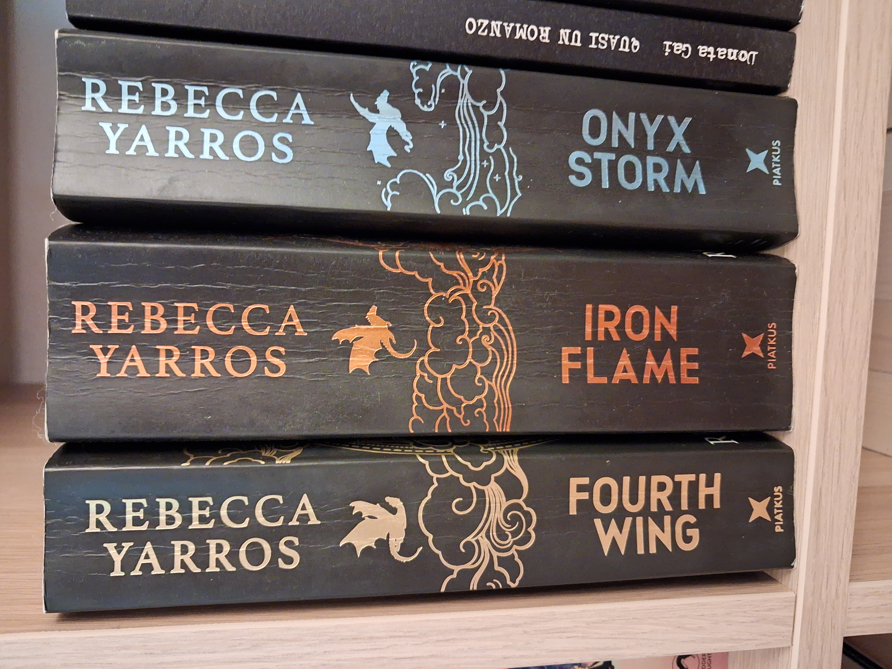

Fourth Wing and the Renewal of Fantasy
Feminist, pornographic, but it has its flaws too

September 2026
Fantasy is not one of my favourite genres, nor is romance, so why did I end up reading Rebecca Yarros's The Empyrean series? The answer is quite easy: the first book in the series, Fourth Wing, found its way into Casa Donatalina because it intrigued my partner, who read it and then bought the next two (Iron Flame and Onyx Storm). And he told me, “Read it, you’ll like the dragons.” And he was right. I liked the dragons a lot; in fact, it would have been interesting (and much less “classic”) if the book had been written from their point of view. Andarna, above all: Andarna is a dragon and she deserves a book of her own.
Instead, the story is told through the eyes of Violet, nicknamed Violence, a human girl who thought she would spend her life among books and ends up having to fight a war and ride a dragon. More girls like her, please: sure, she falls for the handsome, tortured guy, but she remains a capable young woman, and she is an easy character to identify with: a believable young woman, with substance and determination, unlike many female characters in “classic” fantasy. In this sense, hooray for romantasy!!! It has finally freed us from a whole world of female characters who had all the depth of a cardboard cut-out and whose main characteristic, if they had one, was being stupid.
All right, this may be a rather harsh judgement on classic fantasy. But the fantasy I grew up with was written by men (obviously Tolkien and The Lord of the Rings, but also David Eddings with the Belgariad and Malloreon series, Terry Brooks with the Shannara series, just to name a few of the better-known ones), and it showed. Women were almost always pretty accessories, often idiots, or simply two-dimensional. As if the writers had never met a real woman, someone with ideas, a will of her own, preferences, apart from falling in love with the handsome guy and wanting his children.
Now, I’m not trying to be difficult. I understand that everyone is a product of their time, and maybe in Tolkien’s day blah blah blah. But it is still nice to see that times have changed, and that women today (even when they live in a fantasy novel) have ideas and interests, see themselves as independent beings who do not necessarily have to fulfil themselves through motherhood, and actually do things instead of merely decorating the scenery. It is nice to see that the feminist struggles of fifty years ago were not in vain, and that we finally have women writers saying, “Hey, you know what? My protagonist rides dragons, fights, and chooses who gets to mess around with her clitoris.”
Hallelujah.
Then again, it is a very commercial niche: a few hot pages, a few fights, et voilà, you have a bestseller. But it is an enjoyable, gripping read: Yarros builds a fictional world that works, characters with some depth, and a story that is genuinely enjoyable to read. At least in the first book. Then it starts to drag, and the third is rather painful, unless you are a die-hard fan of the genre.
And then there is the cliffhanger: personally, I am bloody sick of stories that never end. Was an 800-page book not enough? Fine, when I pick up a fantasy novel, I already know that, by contract, I am supposed to read at least three. But three is my limit: after that, the story becomes repetitive, nothing is ever resolved, the characters start to unravel and get killed off because nobody knows what else to do with them.
I want books that end, stories that can be read as complete stories in their own right. Then I’ll buy the second and third books, don’t worry, because I want to know what Violet will do next and what will happen to Xaden. But don’t force me into it with these cliffhangers, now an obligatory feature of every TV series and every saga.
I like stories that have a beginning and an end: the enemy is defeated and the protagonists are happy; then, sure, new problems can arise for the next book, but make an effort, writer, don’t keep rehashing the same old stuff for 800 pages!
So, overall, The Empyrean is a series that is enjoyable to read: the first two volumes are very entertaining, the fantasy world is well constructed, the dragons are excellent (their role could be expanded), the human characters are believable and likeable, and the plot is gripping; but the cliffhanger is brazen and annoying, while the third book is boring and inconclusive, seemingly just stirring the same old soup because there are no ideas left. Personally, I don’t think I’ll buy the next volumes, but I recommend the first two, especially if you enjoy escapist fiction and don’t mind there being some sex scenes. Then again, if Andarna becomes the protagonist… I might even buy the next volumes!
And what do you think about the cliffhanger craze? And about this hybridisation that has renewed old, dusty fantasy in a female, if not feminist, key? I’d love to hear what you think, so write to me!